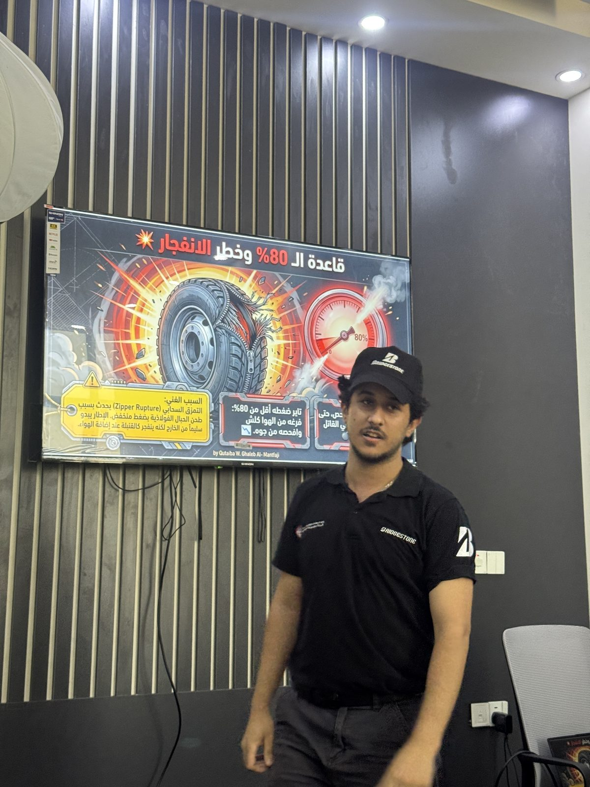
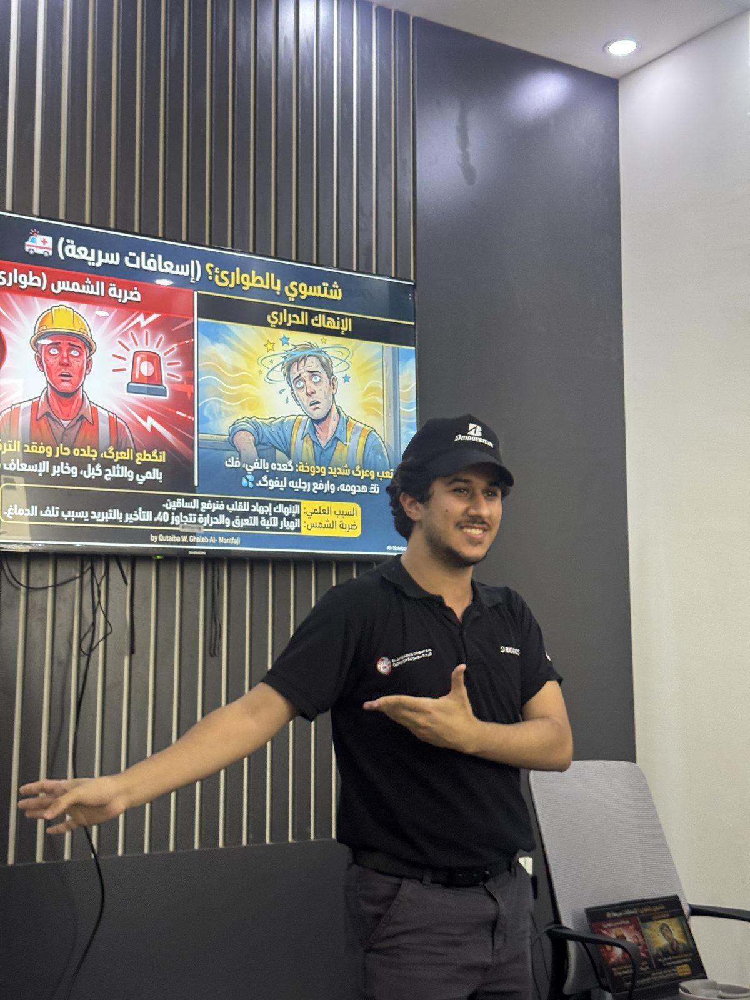

The Premise
A mounted tire is not just a product on a shelf — it is a pressure vessel holding stored energy. Most workshop tire injuries don't happen because someone didn't know the rule. They happen because the tire looked fine, the shift was busy, and thirty seconds felt like a fair trade. The session was built around that gap: not teaching new facts, but making the danger signs impossible to walk past.
What We Covered
Below 80% pressure is not "a little low"
A tire that has lost 20% or more of its rated pressure is treated as flat — it has already been run under-inflated and may be structurally damaged inside, where nothing is visible. Don't stand over it, and never inflate it while it is still mounted and loaded on the vehicle. Demount, inspect, then decide.
Crackling sounds and sidewall bulges mean leave
A popping or crackling noise during inflation, or an unusual bulge in the sidewall, is the tire announcing what it is about to do. The correct response is distance — immediately, not after finishing the task. There is no inspection worth performing at arm's length from a tire in that state.
Heat is a symptom, not the problem
Under-inflation makes the rubber flex more than it was designed to, and that flexing generates heat that degrades the compound and weakens the internal cords. The visible warning — abnormal heat after a drive — is the end of a failure chain that started with pressure, which is why pressure checks come first.
Slide Design
The visual material was built for a workshop floor, not a classroom: one danger per slide, red for the failure state, a single large image, and the instruction written as a direct order rather than a recommendation. All content was written in Arabic — the language the interns actually work in — so nothing had to be translated in the moment it mattered.
Gallery

